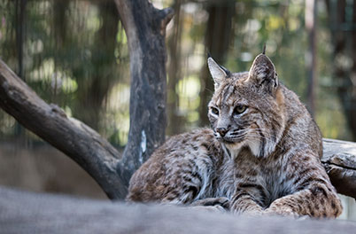

Les félins

Membre de la famille des félidés, le lynx du Canada se distingue par son corps relativement court, ses membres allongés, ses grosses pattes cousinées et ses oreilles pointues se terminant par de longs poils noirs. En Amérique du Nord, il est en général le plus corpulent des félins à queue courte, étant donné que le mâle pèse environ 17 kg (37 lb). Un gros mâle peut même atteindre 32 kg (70 lb) en Eurasie.
À l’instar du chat domestique, le jeune lynx du Canada enterre son urine et ses excréments. L’adulte ne le fait pas; il s’en sert plutôt pour marquer son territoire. Le lynx est un excellent grimpeur et il lui arrive aussi de traverser les ruisseaux et les rivières à la nage.
Chasseur nocturne et solitaire, il débute ses activités peu avant le crépuscule et y met fin peu après le lever du soleil. Sa proie favorite est le lièvre d'Amérique, mais il s'attaque quelquefois aux canards, aux renards, aux mouffettes, voire aux cerfs. Ses principaux ennemis, à part l’humain, sont le couguar et le loup. La suite
